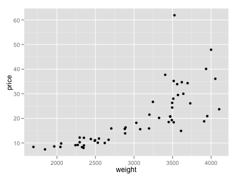
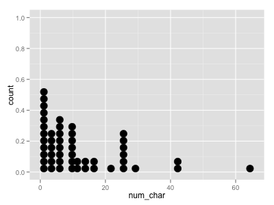

统计学可以分为 描述性统计学(description of statistics) 和 推断性统计学(statistics inference) 。推断统计学使用 方差分析检验(ANOVA) ， 卡方检验(Chi-square test) ， 多元线性回归分析(multiple regression) ， 逻辑回归分析(logistic regression) 。
一般性研究过程可以分为以下几个阶段
统计学研究步骤2~4，即如何收集数据，采取哪些风险方法，能够得出什么结论。
显示观测对象中的每一对变量，用于分析两个变量之间的关系。
library('openintro') library('ggplot2') ggplot(cars, aes(x=weight, y=price)) + geom_point()

与 scatterplot 不同之处在于显示所有观测对象的一个变量。
library('openintro') library('ggplot2') ggplot(email50, aes(x=num_char)) + geom_dotplot()

library('openintro') library('ggplot2') ggplot(email50, aes(x=log(num_char))) + geom_histogram()